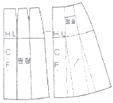
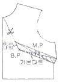
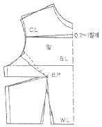
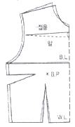
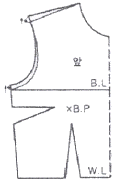
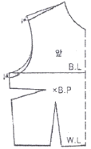
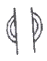

양장기능사 (2009-03-29 기출문제)
1과목: 임의 구분
1. 일반적인 옷감의 필요량 계산법에서 계산된 옷감량 중 타이트 스커트에 해당되는 것은?
- 너비 110cm : 60~70cm
- 너비 110cm : 130~150cm
- 너비 150cm : 170~190cm
- 너비 150cm : 220~270cm
(정답률: 77%)

2. 뒤로 되돌아와 땀을 뜰 때 겉에서 보이지 않도록 두세 올 정도만 땀을 뜨는 바느질은?
- 홈질
- 박음질
- 숨은상침
- 시침질
(정답률: 66%)
3. 다음 그림의 옷본 변형에 해당되는 스커트는?

- 플레어 스커트
- 플리츠 스커트
- 고어 스커트
- 개더 스커트
(정답률: 82%)
4. 길 보정에 대한 설명으로 옳은 것은?
- 목 밑에 군주름이 생긴 경우 : 목둘레선과 어깨선을 올려 준다.
- 등에 수평으로 군주름이 생긴 경우 : 군주름의 분량을 접어서 시침핀을 꽂아 보정한다.
- 겨드랑이 밑에군주름이 생긴 경우 : 다트의 분량을 군주름이 없어지는 분량 만큼 잡아 주고, 그 분량 만큼 밑단분을 올려 준다.
- 목점에서부터 양쪽에 사선으로 군주름이 생긴 경우 : 처진 어깨선의 여유분을 군주름이 없어질 때까지 어깨선에서 잡아 보정하고 그 분량만큼 진동 둘레 밑을 올려 준다.
(정답률: 41%)
5. 옷감의 완성선 표시 방법 중 옷감의 색에 따라 잘 나타나는 색을 선택하여, 패턴을 옷감 위에 놓고 완성선 및 시접선을 긋는데 주로 사용하는 것은?
- 실표뜨기
- 룰렛으로 표시하기
- 송곳 사용하기
- 쵸크로 표시하기
(정답률: 80%)
6. 겉감의 기본 시접으로 틀린 것은?
- 어깨와 옆선 - 2cm
- 진동둘레 - 1.5cm
- 목둘레 - 1cm
- 칼라 - 3cm
(정답률: 92%)
7. 옷감을 오그려서 입체화 시킬 때 오그리기를 하여야 하는 부분이 아닌 것은?
- 어깨
- 허리
- 바지의 밑 위
- 소매산
(정답률: 69%)
8. 스커트 원형제도에 필요한 치수 항목이 아닌 것은?
- 허리둘레
- 밑위길이
- 스커트길이
- 엉덩이길이
(정답률: 92%)
9. 재봉기의 분류 중 재봉방식에 따른 분류에 해당되지 않는 재봉기는?
- 장식봉 재봉기
- 단환봉 재봉기
- 특수봉 재봉기
- 본봉 재봉기
(정답률: 54%)
10. 소매제도에 사용되는 부호와 약자의 연결이 틀린 것은?
- S.C.H - sleeve cap height
- S.B.L - sleeve back line
- C.L - center line
- E.L - elbow line
(정답률: 68%)
11. 다음 중 솔기(seam)의 종류에 속하지 않는 것은?
- 바운드 시임(bound seam)
- 슈퍼임포우즈 시임(superimposed seam)
- 플랫 시임(flat seam)
- 카운트 시임(count seam)
(정답률: 62%)
12. 다음 재봉기 바늘 중 가장 굵은 것은?
- 9번
- 11번
- 12번
- 14번
(정답률: 92%)
13. 봉제시 실의 선택에 대한 설명으로 옳은 것은?
- 옷감에 비하여 실은 굵은 것을 선택하는 것이 좋다.
- 옷감과 같은 재질을 선택하는 것이 좋다.
- 혼방 교직물일 때는 혼용 교직물이 낮은 것을 선택하는 것이 좋다.
- 면직물일 때는 견사를 사용하는 것이 좋다.
(정답률: 93%)
14. 얇은 면직물에 가장 적합한 재봉기 바늘은?
- 9호
- 11호
- 14호
- 16호
(정답률: 49%)
15. 단을 꿰맬 때 주로 쓰이며, 겉으로는 실땀이 나타나지 않게 잘게 뜨고 안으로는 단을 접어 속으로 길게 떠서 고정시키는 바느질은?
- 새발감침
- 말아 감치기
- 공그르기
- 감치기
(정답률: 76%)
16. 다음 그림과 같이 선을 따라 절개시키고 기본 다트를 M.P하는 다트에 해당되는 것은?

- 숄더 다트(shoulder dart)
- 언더 암 다트(under arm dart)
- 센터 프런트 넥 다트(center front neck dart)
- 웨이스트 다트(waist dart)
(정답률: 64%)
17. 프렌치 슬리브(french sleeve)의 설명으로 옳은 것은?
- 목둘레에서 겨드랑이까지 사선으로 이음선이 들어간 소매이다.
- 기모노 슬리브의 일종으로 소매밑단둘레가 비교적 넓어서 편안하게 착용할 수 있는 소매이다.
- 소매를 짧게 하면서 부풀린 소매이다.
- 소매산을 낮게 하고 활동하기에 편하게 한 짧은 소매이다.
(정답률: 76%)
18. 진동둘레선을 향하여 사선으로 주름이 생기는 처진 어깨의 보정방법으로 가장 옳은 것은?
- 뒷길이의 부족량을 절개하여 늘려 준다.
- 진동의 여유분을 접고 어깨타트를 늘려 준다.
- 앞뒷길의 어깨끝점 부분을 내려 주고 진동둘레 밑을 같은 치수로 내려 준다.
- 앞뒷길의 어깨끝점 부분을 올려 주고 진동둘레 밑을 같은 치수로 올려 준다.
(정답률: 87%)
19. 아우어 글라스 실루엣의 설명으로 옳은 것은?
- 윤곽이 원통처럼 된 것으로 튜블러 실루엣이라고도 말한다.
- 웨이스트 라인은 가늘어지고 그 윗부분과 아랫부분은 불룩하게 된 실루엣이다.
- 허리를 조이지 않는 직선적인 실루엣이다.
- 품이 가느다란 실루엣으로 칼럼 실루엣이라고도 말한다.
(정답률: 86%)
20. 스커트 원형을 다트가 1개인 세미 타이트로 만들고, 슬랙스를 제도하는 방법으로 밑부분을 그려 넣는 스커트는?
- 타이트 스커트
- 티어드 스커트
- 큐롯 스커트
- 요크 스커트
(정답률: 57%)
2과목: 임의 구분
21. 반소매 원피스의 옷감 필요량 계산법으로 옳은 것은?
- 너비 100cm : (옷길이 × 1.2) + 소매길이 + 시접(10~15cm)
- 너비 110cm : (옷길이 × 3) + 시접(12~16cm)
- 너비 150cm : (옷길이 × 1.2) + 소매길이 + 시접(20~30cm)
- 너비 150cm : 옷길이 + (소매길이 × 2) + 시접(20~30cm)
(정답률: 50%)
22. 너비 90cm의 옷감으로 스커트 길이기 70cm인 타이트 스커트를 만들 때의 필요한 옷감량으로 가장 적합한 것은? (단, 시접은 15cm임)
- 85cm
- 155cm
- 195cm
- 225cm
(정답률: 74%)
23. 플레어 스커트를 정바이어스로 재단하려고 할 때 알맞은 재단방향은?
- 15° 사선 방향으로 재단
- 30° 사선 방향으로 재단
- 45° 사선 방향으로 재단
- 60° 사선 방향으로 재단
(정답률: 91%)
24. 상반신 굴신체의 보정으로 옳은 것은?




(정답률: 65%)
25. 시점을 완전히 감싸는 방법으로, 얇고 비치거나 풀리기 쉬운 옷감에 주로 이용되는 솔기는?
- 통솔
- 쌈솔
- 평솔
- 홑솔
(정답률: 68%)
26. 인체의 중심부를 크게 4체부로 나눌 때 해당되지 않는 것은?
- 머리
- 목
- 가슴
- 팔
(정답률: 64%)
27. 다음 중 프린세스 라인(princess line)의 설명이 아닌 것은?
- 다트의 양을 풍만하게 개더로 처리하는 선
- 어깨의 숄더 다트와 웨이스트 다트를 연결하는 선
- 암 홀 다트를 연결하는 선
- 스퀘어 랑린으로 이루어진 선
(정답률: 56%)
28. 모사, 견사, 금ㆍ은사 등으로 술 장식을 만들어 천에 달거나, 직물의 물을 풀어서 매듭을 지어 장식하는 것은?
- 개더링(gathering)
- 루싱(ruching)
- 프린징(fringing)
- 스칼럽(scallop)
(정답률: 66%)
29. 상반신 반신체의 보정 방법으로 옳은 것은?
- 뒤옆선을 늘이고 그 분량만큼 앞옆선을 줄여 준다.
- 앞중심에서 사선으로 절개선을 넣어 앞길이의 부족량을 늘려 준다.
- 뒤의 여유분을 접어 주름을 늘린다.
- 뒤의 여유분을 접어 다트분을 늘린다.
(정답률: 95%)
30. 다음 제도 기호의 표시에 해당 되는 것은?

- 늘림
- 줄임
- 주름
- 맞춤
(정답률: 96%)
31. 다음 섬유 중 단면의 모양이 삼각형인 것은?
- 견
- 면
- 모
- 마
(정답률: 91%)
32. 다음 중 가장 가는 실을 뽑을 수 있는 목화는?
- 인도면
- 해도면
- 미국면
- 이집트면
(정답률: 50%)
33. 면직물에 있어서 산화 섬유소가 생성되어서 섬유가 약해지는 경우에 해당되는 것은?
- 아세트산으로 처리할 때 온도가 낮은 경우이다.
- 수산화나트륨 용액으로 삶을 때 직물이 노출되어 공기와 접촉하는 경우이다.
- 하이드로설파이트를 사용하여 표백할 때 직물이 노출되어 공기와 접촉하는 경우이다.
- 냉액에서 알칼리 용액으로 처리할 때 농도가 진한 경우이다.
(정답률: 80%)
34. 의복재료로서 마섬유의 가장 큰 단점은?
- 내열성이 크다.
- 탄성이 작다.
- 흡습성이 크다.
- 열전도성이 작다.
(정답률: 65%)
35. 내구성이 좋고, 열전도성이 좋아 시원한 감을 주며, 여름철 옷감의 원료로 사용되는 섬유는?
- 면
- 모
- 아마
- 견
(정답률: 84%)
36. 면섬유의 등급 사정 사항이 아닌 것은?
- 색
- 강도와 신도
- 외래 잡물
- 조면 성적
(정답률: 59%)
37. 비스코스레이온을 만드는 공정의 순서가 바르게 나열된 것은?
- 황화 → 숙성 → 방사
- 숙성 → 황화 → 방사
- 방사 → 황화 → 숙성
- 황화 → 방사 → 숙성
(정답률: 67%)
38. 다음 중 섬유의 보온성이 좋은 경우가 아닌 것은?
- 열전도성이 적을수록
- 공기함유량이 많을수록
- 초기탄성률이 클수록
- 흡습성이 클수록
(정답률: 50%)
39. 섬유의 분류가 서로 관계없는 것끼리 짝지어진 것은?
- 폴리아크릴계 - 캐시미론
- 폴리아미드계 - 나일론 6
- 폴리비닐알콜계 - 비닐론
- 폴리우레탄계 - 사란
(정답률: 78%)
40. 외부로부터 가해진 힘에 의해 형태가 변한 물체가 외력이 없어져도 원래의 형태로 돌아오지 않는 물질의 성질은?
- 신축성
- 방추성
- 흡습성
- 가소성
(정답률: 68%)
3과목: 임의 구분
41. 다음 중 후퇴색이 아닌 것은?
- 고명도의 색
- 저명도의 색
- 저채도의 색
- 차가운 느낌의 색
(정답률: 74%)
42. 선에 대한 인상으로 틀린 것은?
- 직선 - 곧고, 강하고, 간결한 인상
- 수평선 - 안정적이고 정적인 인상
- 사선 - 부드럽고 우아한 분위기
- 지그재그선 - 날카로운 분위기
(정답률: 74%)
43. 색의 연상에 대한 설명 중 틀린 것은?
- 연상의 개념은 사람의 경험과 지식에 영향을 받는다.
- 빨간색을 보고 불이라고 느끼는 것은 구체적인 대상을 연상하는 것이다.
- 민족성에는 영향을 받으나 나이, 성별에는 영향을 받지 않는다.
- 생활 환경, 교양, 직업의 성격에 영향을 받는다.
(정답률: 88%)
44. 다음 중 고귀한 느낌을 주는 반면, 음성적이며 허무와 실망감을 주는 색은?
- 검정
- 노랑
- 자주
- 파랑
(정답률: 79%)
45. 한 디자인에서 주황색과 노란색으로 조화를 이루었다면 이에 해당되는 색채 조화는?
- 동일 색상 조화
- 인접 색상 조화
- 보색 조화
- 삼각 조화
(정답률: 72%)
46. 색채의 감성으로 세룰리안 블루(cerulean blue)에 대한 설명으로 옳은 것은?
- 하늘과 바다처럼 고요하고 조용한 색이다.
- 청색 중에서도 가장 젊고 화려한 색이다.
- 침착하고 냉정하며 고독한 느낌을 주는 색이다.
- 우울하고 쓸쓸한 느낌을 주는 색이다.
(정답률: 63%)
47. 명도에 대한 설명으로 틀린 것은?
- 또는 라고 한다.
- 밝기와 어둡기의 정도를 말한다.
- 점점 밝아져서 반사율이 높아지면 고명도라고 한다.
- 연분홍색은 분홍색보다 명도가 높은 색이다.
(정답률: 64%)
48. 다음 중 명도가 가장 낮은 색은?
- 빨강
- 초록
- 보라
- 노랑
(정답률: 63%)
49. 색의 시각적 효과 중 처음에 보았던 색의 자극에 영향을 받아 다음에 보이는 색이 다르게 보이는 것은?
- 명도대비
- 채도대비
- 색채대비
- 잔상
(정답률: 63%)
50. 뚱뚱한 사람이 입었을 때 가장 효과적인 배색은?
- 파랑 바탕에 남색
- 파랑 바탕에 노랑
- 파랑 바탕에 빨강
- 파랑 바탕에 흰색
(정답률: 75%)
51. 경파일 조직으로 짧고 부드러운 솜털이 있는 소재는?
- 브로케이드(brocade)
- 색스니(saxony)
- 벨벳(velvet)
- 코듀로이(corduroy)
(정답률: 81%)
52. 습기로 인한 의복의 보관에 발생되는 피해 원인이 아닌 것은?
- 보온성 감소
- 취하
- 변색
- 해충
(정답률: 80%)
53. 모섬유를 염색하는데 가장 많이 사용되는 염료는?
- 매염염료
- 직접염료
- 분산염료
- 산성염료
(정답률: 64%)
54. 다음 중 옷감의 보온성과 가장 관계가 깊은 것은?
- 강도
- 함기율
- 흡습성
- 내추성
(정답률: 81%)
55. 다음 중 전경도에 해당하는 것은?
- 일시경도
- 영구경도
- 영구경도 - 일시경도
- 영구경도 + 일시경도
(정답률: 53%)
56. 다음 중 모피 제품을 세탁할 때 사용하는 것은?
- 톱밥
- 포말
- 에멀젼
- 음이오노 계면활성제
(정답률: 73%)
57. 섬유가 습윤하였을 때 강력이 증가하는 섬유는?
- 양모
- 비스코스레이온
- 아세테이트
- 면
(정답률: 70%)
58. 다음 중 실로 만들어진 피륙이 아닌 것은?
- 부직포
- 직물
- 편성물
- 레이스
(정답률: 72%)
59. 다음 중 수자직의 특징이 아닌 것은?
- 광택이 나쁘다.
- 마찰 강도가 약하다.
- 조직점이 적어서 유연하다.
- 표면이 매끄럽다.
(정답률: 55%)
60. 방한복에 요구되는 형태에 해당되지 않는 것은?
- 피복면적을 크게 한다.
- 가급적 무거운 것이 좋다.
- 의복하에 적당한 정지공기층을 갖도록 한다.
- 신체요소의 보온에 유의한다.
(정답률: 80%)